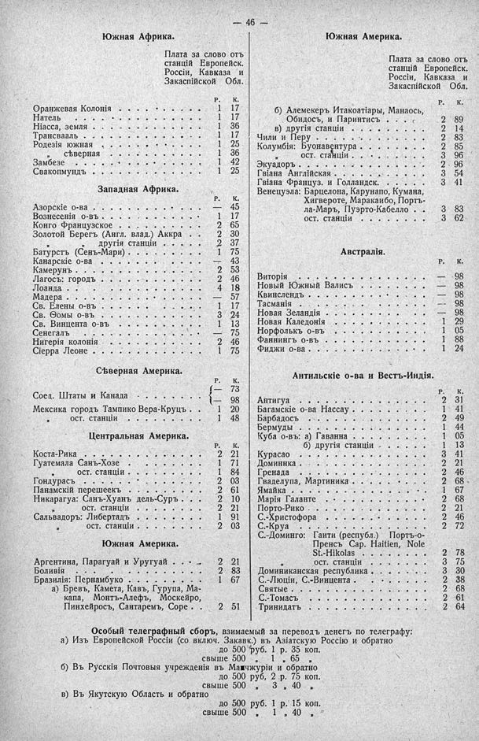

Лист источника 92
Скан

Распознанный текст
— 46 —
Южная Африка.
Плата за слово отъ
станцій Европейск.
Россіи, Кавказа и
Закаспійской Обл.
Р. К.
Оранжевая Колонія . . . . . . . . . 1 17
Натель . . . . . . . . . . . . . . 1 17
Ніасса, земля . . . . . . . . . . . 1 36
Трансвааль . . . . . . . . . . . . 1 17
Родезія южная . . . . . . . . . . . 1 25
„ сѣверная . . . . . . . . . 1 36
Замбезе . . . . . . . . . . . . . . 1 42
Свакопмундъ . . . . . . . . . . . . 1 25
Западная Африка.
Р. К.
Азорскіе о-ва . . . . . . . . . . . — 45
Вознесенія о-въ . . . . . . . . . . 1 17
Конго Французское . . . . . . . . . 2 65
Золотой Берегъ (Англ. влад.) Аккра . 2 30
„ „ другія станціи . . 2 37
Батурстъ (Сенъ-Мари) . . . . . . . 1 75
Канарскіе о-ва . . . . . . . . . . — 43
Камерунъ . . . . . . . . . . . . . 2 53
Лагосъ: городъ . . . . . . . . . . 2 46
Лоанда . . . . . . . . . . . . . . 4 18
Мадера . . . . . . . . . . . . . . — 57
Св. Елены о-въ . . . . . . . . . . 1 17
Св. Ѳомы о-въ . . . . . . . . . . 3 24
Св. Винцента о-въ . . . . . . . . . 1 13
Сенегалъ . . . . . . . . . . . . . — 75
Нигерія колонія . . . . . . . . . . 2 46
Сіерра Леоне . . . . . . . . . . . 1 75
Сѣверная Америка.
Р. К.
Соед. Штаты и Канада . . . . . . . { — 73
{ — 98
Мексика городъ Тампико Вера-Круцъ . 1 20
„ ост. станціи . . . . . . . 1 48
Центральная Америка.
Р. К.
Коста-Рика . . . . . . . . . . . . 2 21
Гуатемала Санъ-Хозе . . . . . . . . 1 71
„ ост. станціи . . . . . . 1 84
Гондурасъ . . . . . . . . . . . . . 2 03
Панамскій перешеекъ . . . . . . . . 2 61
Никарагуа: Санъ-Хуанъ дель-Суръ . . 2 10
„ ост. станціи . . . . . . 2 21
Сальвадоръ: Либертадъ . . . . . . . 1 91
„ ост. станціи . . . . . . 2 03
Южная Америка.
Аргентина, Парагуай и Уругуай . . . 2 21
Боливія . . . . . . . . . . . . . . 2 83
Бразилія: Пернамбуко . . . . . . . 1 67
а) Бревъ, Камета, Кавъ, Гурупа, Ма-
капа, Монтъ-Алефъ, Москейро,
Пинхейросъ, Сантаремъ, Соре . . 2 51
Южная Америка.
Плата за слово отъ
станцій Европейск.
Россіи, Кавказа и
Закаспійской Обл.
Р. К.
б) Алемекеръ Итакоатіары, Манаосъ,
Обидосъ, и Паринтисъ . . . 2 89
в) другія станціи . . . . . . 2 14
Чили и Перу . . . . . . . . . . . . 2 83
Колумбія: Буонавентура . . . . . . 2 85
„ ост. станціи . . . . . . . 3 96
Экуадоръ . . . . . . . . . . . . . 2 96
Гвіана Англійская . . . . . . . . . 3 54
Гвіана Француз. и Голландск. . . . 3 41
Венецуэла: Барцелона, Карунапо, Кумана,
Хигвероте, Маракаибо, Портъ-
ла-Маръ, Пуэрто-Кабелло . 3 83
ост. станціи . . . . . . . 3 62
Австралія.
Р. К.
Виторія . . . . . . . . . . . . . . — 98
Новый Южный Валисъ . . . . . . . . — 98
Квинслендъ . . . . . . . . . . . . — 98
Тасманія . . . . . . . . . . . . . — 98
Новая Зеландія . . . . . . . . . . — 98
Новая Каледонія . . . . . . . . . . 1 29
Норфолькъ о-въ . . . . . . . . . . 1 05
Фаннингъ о-въ . . . . . . . . . . . 1 88
Фиджи о-ва . . . . . . . . . . . . 1 24
Антильскіе о-ва и Вестъ-Индія.
Р. К.
Антигуа . . . . . . . . . . . . . . 2 31
Багамскіе о-ва Нассау . . . . . . . 1 41
Барбадосъ . . . . . . . . . . . . . 2 49
Бермуды . . . . . . . . . . . . . . 1 44
Куба о-въ: а) Гаванна . . . . . . . 1 05
б) другія станціи . . . . 1 13
Курасао . . . . . . . . . . . . . . 3 41
Домиинка . . . . . . . . . . . . . 2 21
Гренада . . . . . . . . . . . . . . 2 46
Гваделупа, Мартиника . . . . . . . 2 68
Ямайка . . . . . . . . . . . . . . 1 67
Марія Галанте . . . . . . . . . . . 2 68
Порто-Рико . . . . . . . . . . . . 2 21
С.-Христофора . . . . . . . . . . . 2 46
С.-Круа . . . . . . . . . . . . . . 2 72
С.-Доминго: Гаити (республ.) Портъ-о-
Пренсъ Сар. Haitien, Nole
St.-Hikolas . . . . . . . 2 78
„ ост. станціи . . . . . . 3 75
Доминиканская республика . . . . . 3 30
С.-Люціи, С.-Винцента . . . . . . . 2 38
Святые . . . . . . . . . . . . . . 2 68
С.-Томасъ . . . . . . . . . . . . . 2 61
Тринидатъ . . . . . . . . . . . . . 2 64
Особый телеграфный сборъ, взимаемый за переводъ денегъ по телеграфу:
а) Изъ Европейской Россіи (со включ. Закавк.) въ Азіатскую Россію и обратно
до 500 руб. 1 р. 35 коп.
свыше 500 „ 1 „ 65 „
б) Въ Русскія Почтовыя учрежденія въ Манчжуріи и обратно
до 500 руб, 2 р. 75 коп.
свыше 500 „ 3 „ 40 „
в) Въ Якутскую Область и обратно
до 500 руб. 1 р. 15 коп.
свыше 500 „ 1 „ 40 „